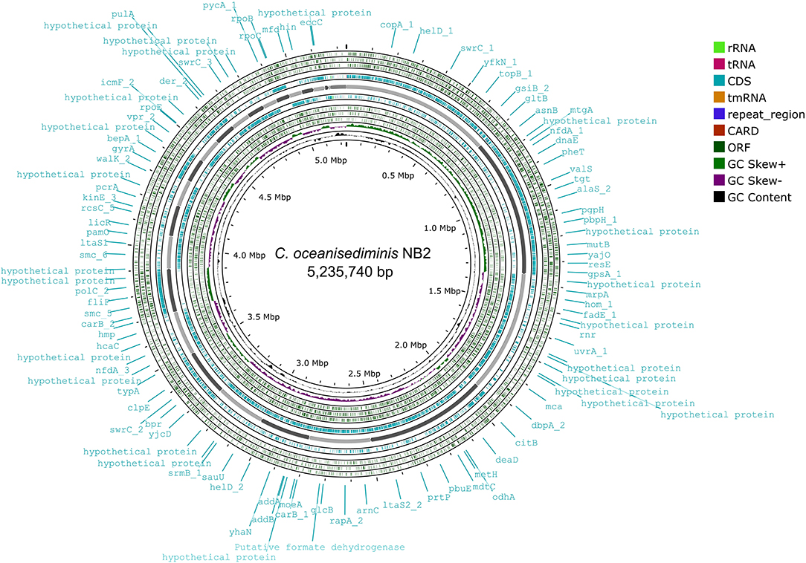
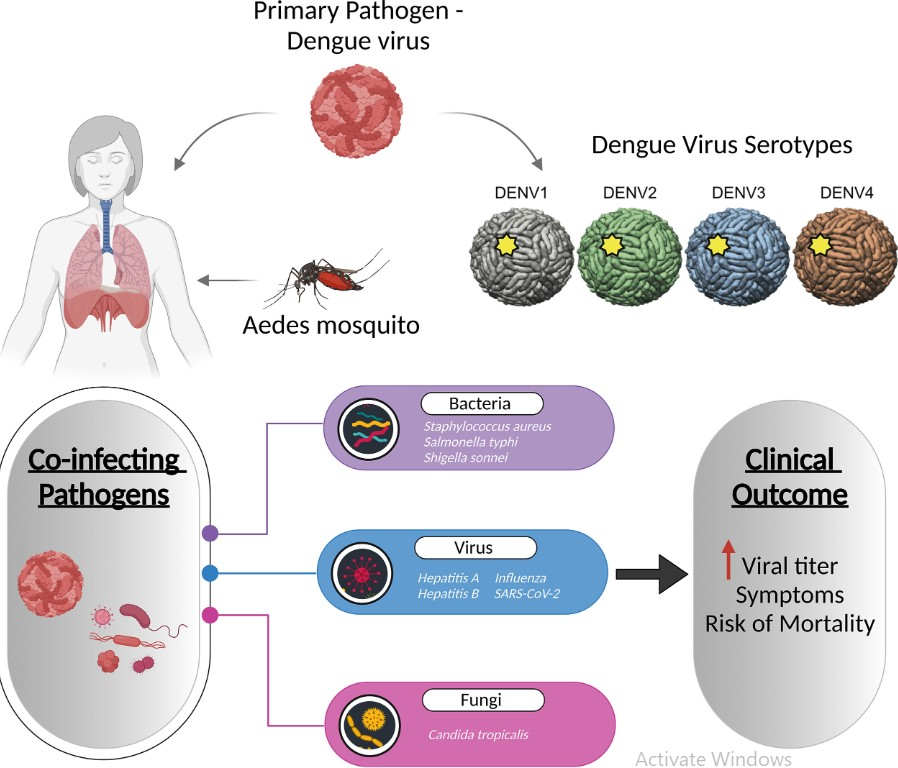
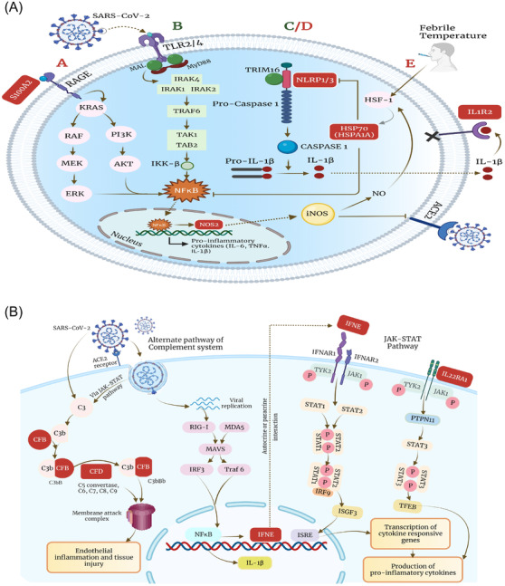

2024 Publications
Reduced protein-coding transcript diversity in severe dengue emphasises the role of alternative splicing
Priyanka Mehta , Chinky Shiu Chen Liu, Sristi Sinha, Ramakant Mohite, Smriti Arora, Partha Chattopadhyay,Sandeep Budhiraja, Bansidhar Tarai, Rajesh Pandey
Life Science Alliance , 2024 , (IF – 5.78)
Read
Generation of an induced pluripotent stem cell line IGIBi18-A from an
Indian patient with Rubinstein Taybi Syndrome
Shweta Vermaa, Sujit Dalabeheraa, Ranjeet Mauryaa, Dayanidhi Singha,
Bhavana Prashera, Rajesh Pandey, Sharmila Bapat, Sivaprakash Ramalingama,
Chetana Sachidanandana,
Stem Cell Research , 2024 , (IF – 1.2)
Read
Integrative analysis discovers Imidurea as dual multitargeted inhibitor of CD69, CD40, SHP2, lysozyme, GATA3, cCBL, and S-cysteinase from SARS-CoV-2 and M. tuberculosis
Shaban Ahmad, Akash Pratap Singh, Nagmi Bano, Khalid Raza, Janmejay Singh,
Guruprasad R. Medigeshi, Rajesh Pandey, Hemant K. Gautam
International Journal of Biological Macromolecules , 2024 , (IF – 8.20)
Read
Protocol to decode the role of transcriptionally
active microbes in SARS-CoV-2-positive
patients using an RNA-seq-based approach
Aanchal Yadav, Priti Devi, Pallawi Kumari, Ranjeet Maurya, Uzma Shamim, Rajesh Pandey
Star Protocol , 2024 , (IF – 1.48)
Read
RNA editing in host lncRNAs as potential modulator in SARS-CoV-2 variants-host immune response dynamics
Partha Chattopadhyay, Priyanka Mehta, Kanika, Pallavi Mishra, Chinky Shiu Chen Liu, Bansidhar Tarai, Sandeep Budhiraja and Rajesh Pandey
iScience , 2024 , (IF – 5.08)
Read
Single cell genomics based insights into the impact of cell-type specific microbial internalization on disease severity
Jyoti Soni and Rajesh Pandey
Frontiers in Immunology , 2024 , (IF – 9.8)
Read
Uncovering the diversity of pathogenic invaders: insights into protozoa, fungi, and worm infections
Richa Shukla, Jyoti Soni, Ashish Kumar and Rajesh Pandey
Frontier in Microbiology , 2024 , (IF – 5.09)
Read
The Effective Inhibitory Concentration of Interferon-b Correlates with Infectivity and Replication Fitness of SARS-CoV-2 Variants
Janmejay Singh, Anbalagan Anantharaj, Parveen Kumar, Rajesh Pandey, Anil Kumar Pandey and Guruprasad R. Medigeshi
Journal of Interferon and Cytokine , 2024 , (IF – 1.91)
Read
Biofertilizer and biocontrol properties of Stenotrophomonas maltophilia BCM emphasize its potential application for sustainable agriculture
Pinki Sharma, Rajesh Pandey and Nar Singh Chauhan
Frontiers in Plant Science , 2024 , (IF – 6.63)
Read
Cell-specific housekeeping role of lncRNAs in COVID-1 9-infected and recovered patients
Partha Chattopadhyay , Priyanka Mehta , Jyoti Soni , Kishore Tardalkar , Meghnad Joshi and Rajesh Pandey
Nucleic Acid Research , 2024 , (IF – 16.60)
Read
Understanding bacterial pathogenicity: a closer look at the journey of harmful microbes
Jyoti Soni , Sristi Sinha and Rajesh Pandey
Frontiers in Microbiology , 2024 , (IF – 5.08)
Read
Dynamics of Whole Transcriptome Analysis (WTA) and Surface markers expression (AbSeq) in Immune Cells of COVID-19 Patients and Recovered captured through Single Cell Genomics
Jyoti Soni, Partha Chattopadhyay, Priyanka Mehta, Ramakant Mohite, Kishore Tardalkar, Meghnad Joshi and Rajesh Pandey
Frontiers in Medicine , 2024 , (IF – 5.09)
Read
An interpretative review of the wastewater-based surveillance of the SARS-CoV-2: where do we stand on its presence and concern?
Gayatri Gogoi, Sarangthem Dinamani Singh, Emon Kalyan, Devpratim Koch, Pronami Gogoi, Mrinmoy Kshattry, Hridoy Jyoti Mahanta, Md Imran, Rajesh Pandey and Pankaj Bharali
Frontiers in Microbiology , 2024 , (IF – 5.08)
Read
Unraveling the genetic evolution of SARS-CoV-2 Recombinants using mutational dynamics across the different lineages (2024)
Varsha Ravi, Uzma Shamim, Md Abuzar Khan, Aparna Swaminathan, Pallavi Mishra, Rajender Singh, Pankaj Bharali, Nar Singh Chauhan and Rajesh Pandey
Frontiers in Medicine , 2024 , (IF – 5.09)
Read
2023 Publications
From bench to bedside: potential of translational research in COVID-19 and beyond
Nityendra Shukla, Uzma Shamim,Preeti Agarwal, Rajesh Pandey and Jitendra Narayan
Briefing in Functional Genomics , 2023 , (IF – 3.75)
Read
Dual RNA-Seq reveals transcriptionally active microbes (TAMs) dynamics in the serum of dengue patients associated with disease severity
Aanchal Yadav, Pallawi Kumari, Priti Devi, Jorelle Jeanne B. Adjele, Sandeep Budhiraja, Bansidhar Tarai and Rajesh Pandey
Frontiers in Microbiology , 2023 , (IF – 6.64)
Read
Suppressed transcript diversity and immune response in COVID-19 ICU patients: a longitudinal study
Priyanka Mehta , Partha Chattopadhyay, Ramakant Mohite, Ranit D’Rozario, Purbita Bandopadhyay, Jafar Sarif, Yogiraj Ray, Dipyaman Ganguly and Rajesh Pandey.
Life Science Alliance , 2023 , (IF – 5.78)
Read
Single-cell RNA-Seq reveals intracellular microbial diversity within immune cells during SARS-CoV-2 infection and recovery
Sunita Yadav, Priyanka Mehta, Jyoti Soni, Partha Chattopadhyay, Priti Devi, Thierry Habyarimana, Kishore Tardalkar, Meghnad Joshi, and Rajesh Pandey.
iScience , 2023 , (IF – 5.08)
Read
Co-evolution of SARS-CoV-2 variants and host immune response trajectories underlie COVID-19 pandemic to epidemic transition
Ranjeet Maurya, Aparna Swaminathan, Uzma Shamim, Smriti Arora, Pallavi Mishra, Aakarshan Raina, Varsha Ravi, Bansidhar Tarai, Sandeep Budhiraja and Rajesh Pandey.
iScience , 2023 , (IF – 5.08)
Read
Neutralizing antibodies from prior exposure to dengue virus negatively correlate with viremia on re-infection
Anbalagan Anantharaj, Tanvi Agrawal, Pooja Kumari Shashi, Alok Tripathi, Parveen Kumar, Imran Khan, Madhu Pareek, Balwant Singh, Chitra Pattabiraman, Saurabh Kumar, Rajesh Pandey, Anmol Chandele, Rakesh Lodha, Stephen S. Whitehead and Guruprasad R. Medigeshi.
Nature Communication , 2023 , (IF – 5.4)
Read
Dysregulated metal ion homeostasis underscores non-canonical function of CD8+ T cell during COVID-19
Kriti Khare , Partha Chattopadhyay, Priti Devi, Priyanka Mehta, Aakarshan Raina, Chinky Shiu Chen Liu, Kishore Tardalkar, Meghnad G. Joshi and Rajesh Pandey.
Frontiers in Medicine , 2023 , (IF – 5.09)
Read
Mutations in S2 subunit of SARS-CoV-2 Omicron spike strongly influence its conformation, fusogenicity, and neutralization sensitivity
Sahil Kumar, Rathina Delipan, Debajyoti Chakraborty, Kawkab Kanjo, Randhir Singh, Nittu Singh, Samreen Siddiqui, Akansha Tyagi, Vinitaa Jha, Krishan G. Thakur, Rajesh Pandey, Raghavan Varadarajan, Rajesh P. Ringe
Journal of Virology , 2023 , (IF – 5.55)
Read
Cleft palate and minor metabolic disturbances in a mouse global Arl15 gene knockout
Ying Bai, Liz Bentley, Chao Ma, Navaratnam Naveenan, James Cleak, Yixing Wu, Michelle M. Simon, Henrik Westerberg, Ramón Casero Cañas, Neil Horner, Rajesh Pandey, Keanu Paphiti, Ulrike Schulze, Joffrey Mianné, Tertius Hough, Lydia Teboul, Jeroen H. F. de Baaij, Roger D. Cox
The FASEB , 2023 , (IF – 5.83)
Read
Metagenomic signatures reveal the key role of phloretin in amelioration of gut dysbiosis attributed to metabolic dysfunction-associated fatty liver disease by time-dependent modulation of gut microbiome
Jyoti Chhimwal, Prince Anand, Priyanka Mehta, Mohit Kumar Swarnkar, Vikram Patial, Rajesh Pandey and Yogendra Padwad
Frontiers in Microbiology , 2023 , (IF – 6.064)
Read Longitudinal study across SARS-CoV-2 variants identifies transcriptionally active microbes (TAMs) associated with Delta severity
Priti Devi, Pallawi Kumari, Aanchal Yadav, Bansidhar Tarai, Sandeep Budhiraja, Uzma Shamim, and Rajesh Pandey
iscience , 2023 , (IF – 5.08)
Read
Molecular determinants associated with temporal succession of SARS-CoV-2 variants in Uttar Pradesh, India
Smita Pal, Poonam Mehta, Ankita Pandey, Anam Ara, Ujjala Ghoshal, Uday C. Ghoshal, Rajesh Pandey, Raj Kamal Tripathi, Prem N. Yadav, Ramachandran Ravishankar, Tapas K. Kundu, Singh Rajender*
Frontiers in Microbiology , 2023 , (IF – 3.518)

Read
Early transcriptomic host response signatures in the serum of dengue patients provides insights into clinical pathogenesis and disease severity
Aanchal Yadav, Uzma Shamim, Varsha Ravi, Priti Devi, Pallawi Kumari, Ranjeet Maurya, Poonam Das, Madhuri Somani, Sandeep Budhiraja, Bansidhar Tarai and Rajesh Pandey
Scientific reports , 2023 , (IF – 3.8 )
Read
SARS-CoV-2 infection severity and mortality is modulated by repeat-mediated regulation of alternative splicing
Priyanka Mehta, Partha Chattopadhyay, Varsha Ravi, Bansidhar Tarai, Sandeep Budhiraja, Rajesh Pandey.
Microbiology Spectrun , 2023 , (IF – 3.7)
Read
Time-resolved transcriptomic profile of oleaginous yeast Rhodotorula mucilaginosa during lipid and carotenoids accumulation on glycerol.
Megha Sailwal, Pallavi Mishra, Debashish Ghosh, Thallada Bhaskar, Rajesh Pandey.
Bioresource Technology , 2023 , (IF – 11.88)
Read
Deficient Phagocytosis in Circulating Monocytes from Patients with COVID-19-Associated Mucormycosis.
Bishnu Prasad Sinha, Priyanka Mehta, Md Asmaul Hoque, Purbita Bandopadhyay, Ayandip Nandi, Ipsita Saha, Anita Nandi Mitra, Asish Mondal, Boudhayan Bhattacharjee, Georgios Chamilos,, RajeshPandey, Kaushik Basu,Dipyaman Ganguly.
mbio , 2023 , (IF – 7.786)
Read
Intertwined Dysregulation of Ribosomal Proteins and Immune Response Delineates SARS-CoV-2 Vaccination Breakthroughs
RanjeetMaurya, Sandeep Budhiraja, UzmaShamim, Pallavi Mishra, Aparna Swaminathan, Aakarshan Raina, Bansidhar Tarai, Rajesh Pandey.
Microbiology Spectrum , 2023 , (IF – 3.7)
Read Transcriptionally active nasopharyngeal commensals and opportunistic microbial dynamics define mild symptoms in the COVID 19 vaccination breakthroughs.
Priti Devi, Pallawi Kumari, Aanchal Yadav Uzma Shamim, , Bansidhar Tarai, Sandeep Budhiraja, Rajesh Pandey
Plos Pathogens , 2023 , (IF – 5.5)
Read
BA.1, BA.2 and BA.2.75 variants show comparable replication kinetics, reduced impact on epithelial barrier and elicit cross neutralizing antibodies.
JanmejaySingh , Anbalagan Anantharaj, MonikaBhardwaj , Parveen Kumar, Aleksha Panwar, Chitra Rani , Partha Chattopadhyay, Ranjeet Maurya Pallavi Mishra, Anil KumarPandey, Priti Devi, Rajesh Pandey and Guruprasad R. Medigeshi
Plos Pathogens , 2023 , (IF – 5.5)
Read
Circulating Interleukin-8 Dynamics Parallels Disease Course and Is Linked to Clinical Outcomes in Severe COVID-19
Ranit D’Rozario, Deblina Raychaudhuri, Purbita Bandopadhyay, Jafar Sarif, Priyanka Mehta, Chinky Shiu Chen Liu, Bishnu Prasad Sinha, Jayasree Roy, Ritwik Bhaduri, Monidipa Das, Sanghamitra Bandyopadhyay, Shekhar Ranjan Paul, Shilpak Chatterjee, Rajesh Pandey, Yogiraj Ray and Dipyaman Ganguly
Viruses , 2023 , (IF – 4.7)
Read
Molecular determinants associated with temporal succession of SARS-CoV-2 variants in Uttar Pradesh, India
Smita Pal, Poonam Mehta, Ankita Pandey, Anam Ara, Ujjala Ghoshal, Uday C. Ghoshal, Rajesh Pandey, Raj Kamal Tripathi, Prem N. Yadav, Ramachandran Ravishankar, Tapas K. Kundu and Singh Rajender
Frontiers in Microbiology , 2023 , (IF – 5.08)
Read
Cellulomonas sp. HM71 as potential probiotic strain for human health
Monika Yadav, Tarun Kumar, Ranjeet Maurya, Rajesh Pandey and Nar Singh Chauhan.
Frontiers in Cellular and Infection Microbiology , 2023 , (IF – 4.6)
Read
Whole-Exome Sequencing of Vitiligo Lesions Indicates Lower Burden of Somatic Variations: Implications in Risk for Nonmelanoma Skin Cancers
Iti Gupta, Shambhavi Shankrit, Kiran Narta, Madeeha Ghazi, Ritika Grover, Rajesh Pandey, Hemanta Kumar Kar, Shruti M Menon, Aayush Gupta, Vamsi K Yenamandra, Archana Singh, Mitali Mukerji, Arijit Mukhopadhyay, Rajni Rani, Rajesh S Gokhale, Debasis Dash, Vivek T Natarajan.
Journal of Investigative Dermatology , 2023 , (IF – 6.5)
Read
Nature and Dimensions of Systemic Hyperinflammation and its Attenuation by Convalescent Plasma in Severe COVID-19
Purbita Bandopadhyay, Ranit D’Rozario, Abhishake Lahiri, Jafar Sarif, Yogiraj Ray, Shekhar Ranjan Paul, Rammohan Roy, Rajshekhar Maiti, Kausik Chaudhuri, Saugata Bagchi, Ayan Maiti, Mohammed Masoom Perwez, Biswanath Sharma Sarkar, Devlina Roy, Rahul Chakraborty, Janani Srinivasa Vasudevan, Sachin Sharma, Durba Biswas, Chikam Maiti, Bibhuti Saha, Prasun Bhattacharya, Rajesh Pandey, Shilpak Chatterjee, Sandip Paul, and Dipyaman Ganguly.
The Journal of Infectious Diseases , 2023 , (IF – 5.23)
Read
Deficient phagocytosis in circulating monocytes from patients with COVID-19-associated mucormycosis
Bishnu Sinha, Priyanka Mehta, Md. Asmaul Hoque, Purbita Bandopadhyay, Ayandip Nandi, Ipsita Saha, Anita Nandi Mitra, Asish Mondal, Boudhayan Bhattacharjee, Georgios Chamilos, Rajesh Pandey, Kaushik Basu, and Dipyaman Ganguly
mbio , 2023 , (IF – 7.786)
Read
BA.1, BA.2 and BA.2.75 variants show comparable replication kinetics, reduced impact on epithelial barrier and elicit cross-neutralizing antibodies
Janmejay Singh, Anbalagan Anantharaj, Aleksha Panwar, Chitra Rani, Monika Bhardwaj, Parveen Kumar, Partha Chattopadhyay, Priti Devi, Ranjeet Maurya, Pallavi Mishra, Anil Kumar Pandey, Rajesh Pandey, Guruprasad R. Medigeshi
Plos Pathogen , 2023 , (IF – 7.464)
Read
Circulating Interleukin-8 Dynamics Parallels Disease Course and Is Linked to Clinical Outcomes in Severe COVID-19
Ranit D’Rozario, Deblina Raychaudhuri, Purbita Bandopadhyay, Jafar Sarif, Priyanka Mehta, Chinky Shiu Chen Liu, Bishnu Prasad Sinha, Jayasree Roy, Ritwik Bhaduri, Monidipa Das, Sanghamitra Bandyopadhyay, Shekhar Ranjan Paul, Shilpak Chatterjee, Rajesh Pandey, Yogiraj Ray and Dipyaman Ganguly
Viruses , 2023 , (IF – 5.818)
Read
Intertwined dysregulation of Ribosomal proteins and Immune response delineates SARS-CoV-2 Vaccination Breakthroughs
Ranjeet Maurya, Uzma Shamim, Pallavi Mishra,, Aparna Swaminathan, Aakarshan Raina, Bansidhar Tarai, Sandeep Budhiraja, Rajesh Pandey*
Microbiology Spectrum , 2023 , (IF – 9.043)
Read
Characterization of Cellulomonas sp. HM71 as potential probiotic strain for human health
Monika Yadav, Tarun Kumar, Ranjeet Maurya, Rajesh Pandey, Nar Singh Chauhan*
Frontiers in Cellular and Infection Microbiology , 2023 , (IF – 6.073)
Read
Transcriptionally active nasopharyngeal commensals and opportunistic microbial dynamics define mild symptoms in the COVID-19 vaccination breakthroughs
Priti Devi, Pallawi Kumari, Aanchal Yadav, Bansidhar Tarai, Sandeep Budhiraja, Uzma Shamim* Rajesh Pandey*
Plos Pathogen , 2023 , (IF – 7.464)
Read
2022 Publications
Transcriptomic study reveals lncRNA-mediated downregulation of innate immune and inflammatory response in the SARS-CoV-2 vaccination breakthrough infections
Partha Chattopadhyay, Pallavi Mishra, Priyanka Mehta, Jyoti Soni, Rohit Gupta, Bansidhar Tarai, Sandeep Budhiraja, Rajesh Pandey*
Frontiers in Immunology , 2022 , (IF – 8.787)
Read
LncRNAs Harbouring Regulatory Motifs Within Repeat Elements Modulate Immune Response Towards COVID-19 Disease Severity and Clinical Outcomes
Partha Chattopadhyay, Pallavi Mishra, Kriti Khare, Aanchal Yadav, Priyanka Mehta, Sheeba Saifi, Aparna Swaminathan, Priti Devi, Shaista Parveen, Akansha Tyagi, Vinita Jha, Bansidhar Tarai, Sujeet Jha, Sandeep Budhiraja, Jitendra Narayan*, Rajesh Pandey*
Clinical and Translational Medicine , 2022 , (IF – 11.49)
Read
Viral infectious diseases severity: co-presence of transcriptionally active microbes (TAMs) can play an integral role for disease severity
Aanchal Yadav, and Rajesh Pandey*
Frontiers in Immunology , 2022 , (IF – 8.786)

Read
Single-cell multiomics revealed the dynamics of antigen presentation, immune response and T cell activation in the COVID-19 positive and recovered individuals
Partha Chattopadhyay, Kriti Khare, Manish Kumar, Pallavi Mishra, Alok Anand, Ranjeet Maurya, Rohit Gupta, Shweta Sahni, Ayushi Gupta, Saruchi Wadhwa, Aanchal Yadav, Priti Devi, Kishore Tardalkar, Meghnad Joshi*, Tavpritesh Sethi* and Rajesh Pandey*
Frontiers in Immunology , 2022 , (IF – 8.786)
Read
SARS‐CoV‐2 Variants of Concern and Variations within Their Genome Architecture: Does Nucleotide Distribution and Mutation Rate Alter the Functionality and Evolution of the Virus?
Varsha Ravi, Aparna Swaminathan, Sunita Yadav, Hemant Arya and Rajesh Pandey*
Viruses , 2022 , (IF – 5.818)
Read
Mutational dynamics across VOCs in International travellers and Community transmission underscores importance of Spike-ACE2 interaction
Priyanka Mehta, Varsha Ravi, Priti Devi, Ranjeet Maurya, Shaista Parveen, Pallavi Mishra, Aanchal Yadav, Aparna Swaminathan, Sheeba Saifi, Kriti Khare, Partha Chattopadhyay, Monika Yadav, Nar Singh Chauhan, Bansidhar Tarai, Sandeep Budhiraja, Uzma Shamim*, Rajesh Pandey*
Microbiological Research , 2022 , (IF – 5.415)
Read
SARS-CoV-2 VOCs, Mutational diversity and clinical outcome: Are they modulating drug efficacy by altered binding strength?
Sheeba Saifi, Varsha Ravi, Sparsh Sharma, Aparna Swaminathan, Nar Singh Chauhan, Rajesh Pandey*
Genomics , 2022 , (IF – 5.736)
Read
Cellular heterogeneity in disease severity and clinical outcome: Granular understanding of immune response is key
Kriti Khare, Rajesh Pandey*
Frontiers in Immunology , 2022 , (IF – 8.787)
Read
Integrative genomics important to understand host-pathogen interactions
Priyanka Mehta, Aparna Swaminathan, Aanchal Yadav, Partha Chattopadhyay, Uzma Shamim, Rajesh Pandey*
Briefings in Functional Genomics , 2022 , (IF – 4.840)
Read
Pre-existing antibody levels negatively correlate with antibody titers after a single dose of BBV152 vaccination
Suman Das, Janmejay Singh, Heena Shaman, Balwant Singh, Anbalagan Anantharaj, Patil Sharanabasava, Rajesh Pandey, Rakesh Lodha, Anil Kumar Pandey, Guruprasad R. Medigeshi*
NATURE COMMUNICATIONS , 2022 , (IF – 17.69)
Read
Human-host transcriptomic analysis reveals unique early innate immune responses in different sub-phenotypes of COVID-19
Ranjeet Maurya,Uzma Shamim, Partha Chattopadhyay, Priyanka Mehta, Pallavi Mishra, Priti Devi, Aparna Swaminathan, Sheeba Saifi, Kriti Khare, Aanchal Yadav, Shaista Parveen, Pooja Sharma,Vivekanand A, Akansha Tyagi, Vinita Jha, Bansidhar Tarai, Sujeet Jha, Mohd Faruq, Sandeep Budhiraja, Rajesh Pandey*
Clinical and Translational Medicine , 2022 , (IF – 11.49)

Read
Increased Abundance of Achromobacter xylosoxidans and Bacillus cereus in Upper Airway Transcriptionally Active Microbiome of COVID-19 Mortality Patients Indicates Role of Co-Infections in Disease Severity and Outcome
Priti Devi, Ranjeet Maurya, Priyanka Mehta, Uzma Shamim, Aanchal Yadav, Partha Chattopadhyay, Akshay Kanakan, Kriti Khare, Janani Srinivasa Vasudevan, Shweta Sahni, Pallavi Mishra, Akansha Tyagi, Sujeet Jha, Sandeep Budhiraja, Bansidhar Tarai, Rajesh Pandey*
Microbiology Spectrum , 2022 , (IF – 7.171)
Read
SARS-CoV-2 Mutations and COVID-19 Clinical Outcome: Mutation Global Frequency Dynamics and Structural Modulation Hold the Key
Ranjeet Maurya, , Pallavi Mishra, Aparna Swaminathan, Varsha Ravi,Sheeba Saifi, Akshay Kanakan, Priyanka Mehta, Priti Devi, Shaista Praveen,Sandeep Budhiraja, Bansidhar Tarai , Shimpa Sharma, Rajesh J. Khyalappa,Meghnad G. Joshi and Rajesh Pandey,*
Frontiers in cellular and infection microbiology , 2022 , (IF – 4.453)
Read
Whole Exome Sequencing in Healthy Individuals of Extreme Constitution Types Reveals Differential Disease Risk: A Novel Approach towards Predictive Medicine
Tahseen Abbas, Gaura Chaturvedi, P. Prakrithi, Ankit Kumar Pathak, Rintu Kutum, Pushkar Dakle, Ankita Narang, Vijeta Manchanda, Rutuja Patil, Dhiraj Aggarwal, Bhushan Girase, Ankita Srivastava, Manav Kapoor, Ishaan Gupta, Rajesh Pandey, Sanjay Juvekar, Debasis Dash*, Mitali Mukerji* and Bhavana Prasher*
Journal of Personalized Medicine , 2022 , (IF – 4.453)
Read
COVID-19 Risk Stratification and Mortality Prediction in Hospitalized Indian Patients: Harnessing clinical data for public health benefits
Shanmukh Alle, Akshay Kanakan, Samreen Siddiqui, Akshit Garg, Akshaya Karthikeyan, Priyanka Mehta, Neha Mishra, Partha Chattopadhyay, Priti Devi, Swati Waghdhare, Akansha Tyagi, Bansidhar Tarai, Pranjal Pratim Hazarik, Poonam Das, Sandeep Budhiraja, Vivek Nangia, Arun Dewan, Ramanathan Sethuraman, C. Subramanian, Mashrin Srivastava, Avinash Chakravarthi, Johnny Jacob, Madhuri Namagiri, Varma Konala, Debasish Dash, Tavpritesh Sethi, Sujeet Jha*, Anurag Agrawal*, Rajesh Pandey*, P. K. Vinod*, U. Deva Priyakumar*
PLoS ONE , 2022 , (IF – 3.24)
Read
Clinico-Genomic Analysis Reiterates Mild Symptoms Post-vaccination Breakthrough: Should We Focus on Low-Frequency Mutations?
Akshay Kanakan, Priyanka Mehta, Priti Devi, Sheeba Saifi, Aparna Swaminathan,Ranjeet Maurya, Partha Chattopadhyay, Bansidhar Tarai, Poonam Das,Vinita Jha, Sandeep Budhiraja* and Rajesh Pandey,*
Frontiers in Microbiology , 2022 , (IF – 4.076)
Read
A phase 2 single center open label randomised control trial for convalescent plasma therapy in patients with severe COVID-19
Yogiraj Ray*, Shekhar Ranjan Paul, Purbita Bandopadhyay, Ranit D’Rozario, Jafar Sarif,Deblina Raychaudhuri, Debaleena Bhowmik, Abhishake Lahiri, Janani Srinivasa Vasudevan,Ranjeet Maurya , Akshay Kanakan, Sachin Sharma, Manish Kumar, Praveen Singh, Rammohan Roy, Kausik Chaudhury, Rajsekhar Maiti, Saugata Bagchi, Ayan Maiti, Md. Masoom Perwez, Abhinandan Mondal, Avinash Tewari, Samik Mandal, Arpan Roy, Moumita Saha, Durba Biswas,Chikam Maiti, Ritwik Bhaduri , Sayantan Chakraborty, Biswanath Sharma Sarkar, Anima Haldar,Bibhuti Saha, Shantanu Sengupta , Rajesh Pandey, Shilpak Chatterjee, Prasun Bhattacharya, Sandip Paul & Dipyaman Ganguly
Nature Communications , 2022 , (IF – 14.92)
Read
Isolation and Characterization of Human Intestinal Bacteria Cytobacillus oceanisediminis NB2 for Probiotic Potential
Monika Yadav, Tarun Kumar, Akshay Kanakan, Ranjeet Maurya, Rajesh Pandey, Nar Singh Chauhan*
Frontiers in Microbiology , 2022 , (IF – 4.076)
Read
Clinical Trial Subgroup Analyses to Investigate Clinical and Immunological Outcomes of Convalescent Plasma Therapy in Severe COVID-19
Deblina Raychaudhuri, Purbita Bandopadhyay, Ranit D'Rozario, Jafar Sarif, Yogiraj Ray, Shekhar Ranjan Paul, Praveen Singh, Kausik Chaudhuri, Ritwik Bhaduri, Rajesh Pandey, Prasun Bhattacharya, Shantanu Sengupta, Shilpak Chatterjee, Dipyaman Ganguly
Mayo Clin Proc Innov Qual Outcomes , 2022 , (IF – 3.2*)
Read
2021 Publications
Learning From Biological and Computational Machines: Importance of SARS-CoV-2 Genomic Surveillance, Mutations and Risk Stratification
Shikha Bhat, Anuradha Pandey, Akshay Kanakan*, Ranjeet Maurya, Janani Srinivasa Vasudevan, Priti Devi, Partha Chattopadhyay, Shimpa Sharma, Rajesh J. Khyalappa, Meghnad G. Joshi and Rajesh Pandey*
Frontiers in Cellular and Infection Microbiology , 2021 , (IF – 5.293)
Read
Vaccine Breakthrough Infections by SARS-CoV-2 Variants after ChAdOx1 nCoV-19 Vaccination in Healthcare Workers
Pratibha Kale, Ekta Gupta, Chhagan Bihari, Niharika Patel, Sheetalnath Rooge, Amit Pandey, Meenu Bajpai, Vikas Khillan, Partha Chattopadhyay, Priti Devi, Ranjeet Maurya, Neha Jha, Priyanka Mehta, Manish Kumar, Pooja Sharma, Sheeba Saifi, Aparna Swaminathan, Sarfaraz Alam, Bharathram Uppili, Mohammed Faruq, Anurag Agrawal, Rajesh Pandey, Shiv Kumar Sarin
Vaccines (Basel) , 2021 , (IF – 4.82)
Read
Resolution of viral load in mild COVID-19 patients is associated with both innate and adaptive immune responses
Anbalagan Anantharaj, Sunil Gujjar, Nikhil Verma, Naseem Ahmed Khan, Heena Shaman, Patil Sharanabasava, Asim Das, Rajesh Pandey, Anil Kumar Pandey, Guruprasad R. Medigeshi*
Journal of Clinical Virology , 2021 , (IF – 3.168)
Read
Geographical Landscape and Transmission Dynamics of SARS-CoV-2 Variants Across India: A Longitudinal Perspective
Neha Jha, Dwight Hall, Akshay Kanakan, Priyanka Mehta, Ranjeet Maurya, Quoseena Mir, Hunter Mathias Gill , Sarath Chandra Janga* and Rajesh Pandey*
Frontiers in Genetics , 2021 , (IF – 3.789)
Read
A Stabilized, Monomeric, Receptor Binding Domain Elicits High-Titer Neutralizing Antibodies Against All SARS-CoV-2 Variants of Concern
Shahbaz Ahmed, Mohammad Suhail Khan, Savitha Gayathri, Randhir Singh,Sahil Kumar, Unnatiben Rajeshbhai Patel, Sameer Kumar Malladi, Raju S. Rajmani,Petrus Jansen van Vuren, Shane Riddell , Sarah Goldie, Nidhi Girish , Poorvi Reddy,Aditya Upadhyaya, Suman Pandey, Samreen Siddiqui, Akansha Tyagi, Sujeet Jha,Rajesh Pandey, Oyahida Khatun, Rohan Narayan, Shashank Tripathi, Alexander J. McAuley, Nagendrakumar Balasubramanian Singanallur, Seshadri S. Vasan, Rajesh P. Ringe* and Raghavan Varadarajan*
Frontiers in Immunology , 2021 , (IF – 6.429)
Read
Effectiveness of ChAdOx1 nCoV-19 vaccine against SARS-CoV-2 infection during the delta (B.1.617.2) variant surge in India: a test-negative, case-control study and a mechanistic study of post-vaccination immune responses
Ramachandran Thiruvengadam, Amit Awasthi*, Guruprasad Medigeshi*, Sankar Bhattacharya, Shailendra Mani, Sridhar Sivasubbu, Tripti Shrivastava, Sweety Samal, Deepika Rathna Murugesan, Bapu Koundinya Desiraju, Pallavi Kshetrapal, Rajesh Pandey, Vinod Scaria, Praveen Kumar Malik,Juhi Taneja, Akshay Binayke, Tarini Vohra, Aymaan Zaheer, Deepak Rathore, Naseem Ahmad Khan, Heena Shaman, Shubbir Ahmed, Rajesh Kumar, Suprit Deshpande, Chandru Subramani, Nitya Wadhwa, Nimesh Gupta, Anil K Pandey, Jayanta Bhattacharya, Anurag Agrawal, Sudhanshu Vrati, Shinjini Bhatnagar, Pramod Kumar Garg, on behalf of the Department of Biotechnology India Consortium for COVID-research
Lancet Infectious Diseases , 2021 , (IF – 71·421)
Read
Genomic characterization and Epidemiology of an emerging SARS-CoV-2 variant in Delhi, India
Mahesh S Dhar, Robin Marwal, VS Radhakrishnan, Kalaiarasan Ponnusamy, Bani Jolly, Rahul C. Bhoyar, Viren Sardana, Salwa Naushin, Mercy Rophina, Thomas A Mellan, Swapnil Mishra, Charles Whittaker, Saman Fatihi, Meena Datta, Priyanka Singh, Uma Sharma, Rajat Ujjainiya, Nitin Bhatheja, Mohit Kumar Divakar, Manoj K Singh, Mohamed Imran, Vigneshwar Senthivel, Ranjeet Maurya, Neha Jha, Priyanka Mehta, A Vivekanand, Pooja Sharma, VR Arvinden, Urmila Chaudhary, Namita Soni, Lipi Thukral, Seth Flaxman, Samir Bhatt, Rajesh Pandey, Debasis Dash, Mohammed Faruq, Hemlata Lall, Hema Gogia, Preeti Madan, Sanket Kulkarni, Himanshu Chauhan, Shantanu Sengupta, Sandhya Kabra, The Indian SARS-CoV- Genomics Consortium (INSACOG), Ravindra K. Gupta, Sujeet K Singh, Anurag Agrawal*, Partha Rakshit*
Science , 2021 , (IF – 63.714)
Read
Single-Cell Genomics: Enabling the Functional Elucidation of Infectious Diseases in Multi-Cell Genomes
Shweta Sahni, Partha Chattopadhyay, Kriti Khare and Rajesh Pandey*
Pathogens , 2021 , (IF – 3.406)
Read
Immunogenicity and Protective Efficacy of a Highly Thermotolerant,Trimeric SARS-CoV‑2 Receptor Binding Domain Derivative
Sameer Kumar Malladi, Unnatiben Rajeshbhai Patel, Raju S. Rajmani, Randhir Singh, Suman Pandey, Sahil Kumar, Sara Khaleeq, Petrus Jansen van Vuren, Shane Riddell, Sarah Goldie, Savitha Gayathri, Debajyoti Chakraborty, Parismita Kalita, Ishika Pramanick, Nupur Agarwal, Poorvi Reddy, Nidhi Girish, Aditya Upadhyaya, Mohammad Suhail Khan, Kawkab Kanjo, Madhuraj Bhat, Shailendra Mani, Sankar Bhattacharyya, Samreen Siddiqui, Akansha Tyagi, Sujeet Jha, Rajesh Pandey, Shashank Tripathi, Somnath Dutta, Alexander J. McAuley, Nagendrakumar Balasubramanian Singanallur, Seshadri S. Vasan, Rajesh P. Ringe* and Raghavan Varadarajan*
The Journal of Infectious Diseases , 2021 , (IF – 5.226)
Read
Plasma Gradient of Soluble Urokinase-Type Plasminogen Activator Receptor Is Linked to Pathogenic Plasma Proteome and Immune Transcriptome and Stratifies Outcomes in Severe COVID-19
Jafar Sarif, Deblina Raychaudhuri, Ranit D’Rozario, Purbita Bandopadhyay, Praveen Singh, Priyanka Mehta, Md. Asmaul Hoque, Bishnu Prasad Sinha,Manoj Kushwaha, Shweta Sahni, Priti Devi, Partha Chattopadhyay, Shekhar Ranjan Paul, Yogiraj Ray, Kausik Chaudhuri, Sayantan Banerjee, Debajyoti Majumdar, Bibhuti Saha, Biswanath Sharma Sarkar, Prasun Bhattacharya, Shilpak Chatterjee, Sandip Paul, Pramit Ghosh, Rajesh Pandey, Shantanu Sengupta* and Dipyaman Ganguly*
Frontiers in Immunology , 2021 , (IF – 6.429)
Read
Culture-Independent Exploration of the Hypersaline Ecosystem Indicates the Environment-Specific Microbiome Evolution
Priyanka Mehta, Monika Yadav, Vasim Ahmed, Khushboo Goyal, Rajesh Pandey* and Nar Singh Chauhan*
Frontiers in Microbiology , 2021 , (IF – 4.076)
Read
SARS-CoV-2 B.1.617.2 Delta variant replication and immune evasion
Petra Mlcochova, Steven A. Kemp, Mahesh Shanker Dhar, Guido Papa, Bo Meng, Isabella A. T. M. Ferreira, Rawlings Datir, Dami A. Collier, Anna Albecka, Sujeet Singh, Rajesh Pandey, Jonathan Brown, Jie Zhou, Niluka Goonawardane, Swapnil Mishra, Charles Whittaker, Thomas Mellan, Robin Marwal, Meena Datta, Shantanu Sengupta, Kalaiarasan Ponnusamy, Venkatraman Srinivasan Radhakrishnan, Adam Abdullahi, Oscar Charles, Partha Chattopadhyay, Priti Devi, Daniela Caputo, Tom Peacock,Chand Wattal0, Neeraj Goe, Ambrish Satwik, Raju Vaishya, Meenakshi Agarwal, TheIndian SARS-CoV- Genomics Consortium (INSACOG)*, The Genotype to Phenotype Japan(GP-Japan) Consortium*, The CITIID-NIHR BioResource COVID- Collaboration*, Antranik Mavousian, Joo Hyeon Lee, Jessica Bassi, Chiara Silacci-Fegni, Christian Saliba, Dora Pinto, Takashi Irie, Isao Yoshida, William L. Hamilton, Kei Sato, Samir Bhatt, Seth Flaxman, Leo C. James, Davide Corti, Luca Piccoli, Wendy S. Barclay, Partha Rakshit, Anurag Agrawal & Ravindra K. Gupta
Nature , 2021 , (IF – 49.96)
Read
Clinico-Genomic Analysis Reveals Mutations Associated with COVID-19 Disease Severity: Possible Modulation by RNA Structure
Priyanka Mehta, Shanmukh Alle, Anusha Chaturvedi, Aparna Swaminathan, Sheeba Saifi, Ranjeet Maurya, Partha Chattopadhyay, Priti Devi , Ruchi Chauhan , Akshay Kanakan, Janani Srinivasa Vasudevan, Ramanathan Sethuraman, Subramanian Chidambaram, Mashrin Srivastava, Avinash Chakravarthi, Johnny Jacob, Madhuri Namagiri, Varma Konala, Sujeet Jha , U. Deva Priyakumar*, P. K. Vinod* and Rajesh Pandey*
Pathogens , 2021 , (IF – 3.406)
Read
Infection outcome needs two to tango: human host and the pathogen
Ranjeet Maurya, Akshay Kanakan, Janani Srinivasa Vasudevan, Partha Chattopadhyay and Rajesh Pandey*
Briefings in Functional Genomics , 2021 , (IF – 4.241)
Read
Nature and dimensions of the systemic hyper-inflammation and its attenuation by convalescent plasma in severe COVID-19
Purbita Bandopadhyay, Ranit D’Rozario, Abhishake Lahiri, Jafar Sarif, Yogiraj Ray, Shekhar Ranjan Paul, Rammohan Roy, Rajshekhar Maiti, Kausik Chaudhuri, Saugata Bagchi, Ayan Maiti, Md. Masoom Perwez, Biswanath Sharma Sarkar, Devlina Roy, Rahul Chakraborty, Janani Srinivasa Vasudevan, Sachin Sharma, Durba Biswas, Chikam Maiti, Bibhuti Saha, Prasun Bhattacharya, Rajesh Pandey, Shilpak Chatterjee, Sandip Paul, Dipyaman Ganguly*
The Journal of Infectious Diseases , 2021 , (IF – 5.226)
Read
Genome and transcriptome analysis of the mealybug Maconellicoccus hirsutus: Correlation with its unique phenotypes
Surbhi Kohli, Parul Gulati, Ankita Narang , Jayant Maini, K V Shamsudheen, Rajesh Pandey, Vinod Scaria, Sridhar Sivasubbu , Vani Brahmachari
Genomics , 2021 , (IF – 5.736)
Read
Co-infections as Modulators of Disease Outcome: Minor Players or Major Players?
Priti Devi, Azka Khan, Partha Chattopadhyay, Priyanka Mehta, Shweta Sahni, Sachin Sharma and Rajesh Pandey*
Frontiers in Microbiology , 2021 , (IF – 4.076)
Read
FnCas9-based CRISPR diagnostic for rapid and accurate detection of major SARS-CoV-2 variants on a paper strip
Manoj Kumar, Sneha Gulati, Asgar H Ansari, Rhythm Phutela, Sundaram Acharya, Mohd Azhar, Jayaram Murthy, Poorti Kathpalia, Akshay Kanakan, Ranjeet Maurya, Janani Srinivasa Vasudevan, Aparna S, Rajesh Pandey, Souvik Maiti*, Debojyoti Chakraborty*
eLife , 2021 , (IF – 8.14)
Read
Respiratory Co-Infections: Modulators of SARS-CoV-2 Patients’ Clinical Sub-Phenotype
Priyanka Mehta, Shweta Sahni, Samreen Siddiqui, Neha Mishra, Pooja Sharma, Sachin Sharma, Akansha Tyagi, Partha Chattopadhyay, Vivekanand A, Priti Devi, Azka Khan, Swati Waghdhare, Sandeep Budhiraja, Bharathram Uppili, Ranjeet Maurya, Vivek Nangia, Uzma Shamim, Pranjal P. Hazarika, Saruchi Wadhwa, Nishu Tyagi, Arun Dewan, Bansidhar Tarai, Poonam Das, Mohammed Faruq, Anurag Agrawal, Sujeet Jha and Rajesh Pandey*
Frontiers in Microbiology , 2021 , (IF – 4.076)
Read
Reinfection or reactivation: Genome‐based two distinct SNP profile of SARS‐CoV2 repositivity in an Indian case
Mahesh S. Dhar, Vivekanand Asokachandran, Bharathram Uppili, Nishu Tyagi, Pooja Sharma, Simmi Tiwari, RadhaKrishnan V. Srinivasan, Robin Marwal, Akshay Kanakan, Azka M. Khan, Rajesh Pandey, Manoj Jais, Sanjib Gogoi, Ajit Shewale, Tushar Nale, Sandhya Kabra, Mohammed Faruq, Sujeet Singh, Anurag Agrawal, Partha Rakshit
Journal of Medical Virology , 2021 , (IF – 20.69)
Read
Mapping of the benzoate metabolism by human gut microbiome indicates food-derived metagenome evolution
Monika Yadav, Avinash Lomash, Seema Kapoor, Rajesh Pandey & Nar Singh Chauhan
Scientific Reports , 2021 , (IF – 3.998)
Read
Clinical, Serological, Whole Genome Sequence Analyses to Confirm SARS-CoV-2 Reinfection in Patients From Mumbai, India.
Jayanthi Shastri, Swapneil Parikh, Sachee Agrawal, Nirjhar Chatterjee, Manish Pathak, Sakshi Chaudhary, Chetan Sharma, Akshay Kanakan, Vivekanand A, Janani Srinivasa Vasudevan, Ranjeet Maurya, Saman Fatihi, Lipi Thukral, Anurag Agrawal, Lancelot Pinto, Rajesh Pandey and Sujatha Sunil.
Frontiers in Medicine , Mar 2021 , (IF – 3.9)
Read
Noncoding RNAs: modulators and modulatable players during infection-induced stress response
Partha Chattopadhyay, Janani Srinivasa Vasudevan and Rajesh Pandey.
Briefings in Functional Genomics , 2021 , (IF – 2.941)
Read
Nature and dimensions of the systemic hyperinflammation and its attenuation by convalescent plasma in severe COVID-19.
Purbita Bandopadhyay, Ranit D’ Rozario, Abhishake Lahiri, Jafar Sarif, Yogiraj Ray, Shekhar Ranjan Paul, Rammohan Roy, Rajshekhar Maiti, Kausik Chaudhuri, Saugata Bagchi, Ayan Maiti, Md Masoom Perwez, Biswanath Sharma Sarkar, Devlina Roy, Rahul Chakraborty, Janani Srinivasa Vasudevan, Sachin Sharma, Durba Biswas, Chikam Maiti, Bibhuti Saha, Prasun Bhattacharya, Rajesh Pandey, Shilpak Chatterjee, Sandip Paul, Dipyaman Ganguly.
The Journal of Infectious Diseases , 2021 , (IF – 3.202)
Read
2020 Publications
Hypoxia Inducible Factor-1α: The Curator of Gut Homeostasis.
Narsingh Chauhan, Tarun Kumar, Rajesh Pandey.
Frontiers in Cellular and Infection Microbiology , 2020 , (IF –
3.51)
Read
Multiple Alu Exonization in 3 0 UTR of a Primate-Specific Isoform of CYP20A1 Creates a Potential miRNA Sponge.
Aniket Bhattacharya, Vineet Jha, Khushboo Singhal, Mahar Fatima, Dayanidhi Singh, Gaura Chaturvedi, Dhwani Dholakia, Rintu Kutum, Rajesh Pandey, Trygve E Bakken, Pankaj Seth, Beena Pillai, Mitali Mukerji.
Genome Biology and Evolution , 2020 , (IF – 3.462)
Read
Threading the Pieces Together: Integrative Perspective on SARS-CoV-2.
Akshay Kanakan, Neha Mishra, Janani Srinivasa Vasudevan, Sachin Sharma, Shweta Sahni, Azka Khan and Rajesh Pandey.
pathogens , 2020 , (IF – 3.018)
Read
Integrated genomic view of SARS-CoV-2 in India.
Pramod Kumar#, Rajesh Pandey#, Pooja Sharma#, Mahesh S Dhar#, Vivekanand A, Bharathram Uppili, Himanshu Vashisht, Saruchi Wadhwa, Nishu Tyagi, Saman Fatihi, Uma Sharma, Priyanka Singh, Hemlata Lall, Meena Datta, Poonam Gupta, Nidhi Saini, Aarti Tewari, Bibhash Nandi, Dhirendra Kumar, Satyabrata Bag, Deepanshi Gahlot, Surabhi Rathore, Nidhi Jatana, Varun Jaiswal, Hema Gogia, Preeti Madan, Simrita Singh, Prateek Singh, Debasis Dash, Manju Bala, Sandhya Kabra, Sujeet Singh, Mitali Mukerji, Lipi Thukral, Mohammed Faruq#, Anurag Agrawal#, Partha Rakshit
Wellcome Open Research , 2020 , (IF – 1.86) , (# Joint First Author)
Read
Catabolic Machinery of the Human Gut Microbes Bestow Resilience Against Vanillin Antimicrobial Nature.
Monika Yadav, Rajesh Pandey and Nar Singh Chauhan
frontiers in Microbiology , 2020 , (IF – 4.235)
Read
Next generation sequencing for pandemic preparedness.
Rajesh Pandey and Anurag Agrawal.
INDIAN CHEMICAL ENGINEER , 2020 ,
Read
2019 Publications
The development of a high throughput drug-responsive model of white adipose tissue comprising
adipogenic 3T3-L1 cells in a 3D matrix.
Graham AD#, Pandey R#, Tsancheva VS, Candeo A, Botchway SW, Allan AJ, Teboul L, Madi K,
Babra TS, Zolkiewski LAK, Xue X, Bentley L, Gannon J, Olof SN, Cox RD.
Biofabrication , 2019 , (IF – 7.23) , (# Joint First Author)
Read
Myg1 exonuclease couples the nuclear and mitochondrial translational programs through RNA processing.
Grover R, Burse S, Shankrit S, Aggarwal A, Kirty K, Narta K, Srivastav R, Ray AK, Malik G,
Vats A, Motiani R, Thukral L, Sinha Roy S, Bhattacharya S, Sharma R, Natarajan K, Mukerji M, Pandey R,
Gokhale R, Natarajan V.
Nucleic Acids Research , 2019 , (IF – 11.56)
Read
Array based DNA methylation profiling reveals peripheral blood differential methylation in male
infertility.
Sarkar S, Mohanty SK, Singh V, Pandey R, Trivedi S, Singh K, Gupta G, Singh R.
Fertility and Sterility , 2019 , (IF – 4.80)
Read
2018 Publications
S9A serine protease engender antigenic gluten catabolic competence to the human gut microbe.
Kumar J, Verma MK, Kumar T, Gupta S, Pandey R, Yadav M, Chauhan N.
Indian Journal of Microbiology , 2018 , (IF – 0.99)
Read
Functional metagenomics identifies novel genes ABCTPP, TMSRP1 and TLSRP1 among human gut
enterotype.
Verma MK, Ahmed V, Gupta S, Kumar J, Pandey R, Mandhan V, Chauhan N.
Scientific Reports , 2018 , (IF – 4.26)
Read
First Degree Relatives of Patients with Celiac Disease Harbour an Intestinal Transcriptomic Signature
that Might Protect Them from Enterocyte Damage.
Acharya P#, Kutum R#, Pandey R#, Mishra A, Saha R, Munjal A, Ahuja V, Mukerji M, Makharia
GK.
Clinical & Translational Gastroenterology , 2018 , (IF –
3.92) , (# Joint First Author)
Read
Genome-wide differential methylation analyses identifies methylation signatures of male infertility
and candidates for spermatogenesis.
Mohanty SK, Sarkar S, Singh V, Pandey R, Agrawal NK, Trivedi S, Singh K, Gupta G, Singh R.
Human Reproduction , 2018 , (IF – 4.99)
Read
Large scale changes in the transcriptome of Eisenia fetida during regeneration.
Bhambri A, Dhaunta N, Patel SS, Hardikar M, Srikakulam N, Shridhar S, Vellarikkal S,
Suryawanshi H, Pandey R, Jayarajan R, Verma A, Kumar V, Bhatt A, Gautam P, Rai M, Khan JA, Fromm B, Peterson KJ, Scaria V, Sivasubbu S, Pillai B.
PLoS One , 2018 , (IF – 2.76)
Read
miR-876-3p regulates glucose homeostasis and insulin sensitivity by targeting adiponectin.
Rajan S, Panzade G, Srivastava A, Shankar K, Pandey R, Kumar D, Gupta S, Gupta A, Varshney
S, Beg M, Mishra RK, Shankar S, Gaikwad AN.
Journal of Endocrinology, , 2018 , (IF – 4.70)
Read
Adipocyte model of Mycobacterium tuberculosis infection reveals differential iron availability to
bacilli in the lipid rich caseous environment.
Nandy A, Mondal AK, Pandey R, Arumugam P, Dawa S, Jaisinghani N, Rao V, Dash D, Gandotra S.
Infection and Immunity , 2018 , (IF – 3.73)
Read
Western Indian Rural Gut Microbial Diversity in Extreme Prakriti Endo-Phenotypes Reveals Signature
Microbes.
Chauhan NS†, Pandey R†, Mondal AK†, Gupta S, Verma MK, Jain S, Ahmed V, Patil R, Agarwal D,
Girase B, Shrivastava A, Mobeen F, Sharma V, Srivastava TP, Juvekar SK, Prasher B, Mukerji M, Dash D.
Frontiers in Microbiology , 2018 , (IF – 4.08) , († Joint
First Author)
Read
Differential strengths of molecular determinants guide environment specific mutational fate.
Dandage R, Pandey R, Jayaraj G, Rai M, Berger D, Chakraborty.
PLOS Genetic , 2018 , (IF – 6.01)
Read
2017 Publications
Systemic analysis of soil microbiome deciphers anthropogenic influence on soil ecology and ecosystem
functioning.
Gupta S, Kumar M, Kumar J, Ahmad V, Pandey R, Chauhan NS.
International Journal of Environmental Science and Technology , 2017 ,
(IF – 2.34)
Read
Physiopathology and management of Gluten induced Celiac disease.
Kumar J, Kumar M, Pandey R, Chauhan NS.
Journal of Food Science , 2017 , (IF – 1.65)
Read
Mapping protein binding sites and conformational epitopes using cysteine labeling and yeast surface
display.
Najar TA, Khare S, Pandey R, Gupta SK, Varadarajan.
Structure, , 2017 , (IF – 5.24)
Read
Comparative genomics of host-symbiont and free-living Oceanobacillus species.
Kumar Mondal A#, Kumar J#, Pandey R#, Gupta S, Kumar M, Bansal G, Mukerji M, Dash D, Singh
Chauhan N.
Genome Biology and Evolution , 2017 , (IF – 4.1) , (# Joint
First Author)
Read
2016 Publications
Microbial community profiling shows dysbiosis in the lesional skin of Vitiligo subjects.
Ganju P, Nagpal S, Mohammed MH, Nishal Kumar P, Pandey R, Natarajan VT, Mande SS, Gokhale
RS.
Scientific Reports , 2016 , (IF – 5.58)
Read
Human satellite-III non-coding RNAs modulate heat shock-induced transcriptional repression.
Goenka A, Sengupta S, Pandey R, Parihar R, Mohanta GC, Mukerji M, Ganesh S.
Journal of Cell Science , 2016 , (IF – 4.71)
Read
Whole genome sequencing of emerging multidrug resistant Candida auris isolates in India demonstrates
low genetic variation.
C. Sharma, N. Kumar, R. Pandey, J.F. Meis, A. Chowdhary.
New Microbes and New Infections , 2016 , Source Normalized Impact
per Paper (SNIP): 0.68
Read
Ayurgenomics for stratified medicine: TRISUTRA consortium initiative across ethnically and
geographically diverse Indian populations.
Prasher B, Varma B, Kumar A, Khuntia BK, Pandey R, Narang A, Tiwari P, Kutum R, Guin D,
Kukreti R, Dash D, TRISUTRA Ayurgenomics Consortium, Mukerji M.
Journal of Ethnopharmacology , 2016 , (IF – 3.05)
Read
An Improved Methodology to Overcome Key Issues Associated with the Methods of Human Fecal Metagenomic
DNA Extraction.
Kumar J, Kumar M, Gupta S, Ahmed V, Bhambi M, Pandey R, Chauhan NS.
Genomics Proteomics Bioinformatics , 2016 , (IF – 1.06)
Read
Human brain harbors single nucleotide somatic variations in functionally relevant genes possibly
mediated by oxidative stress.
Sharma A, Ansari AH, Kumari R, Pandey R, Rehman R, Mehani B, Varma B, Desiraju BK,
Mabalirajan U, Agrawal A, Mukhopadhyay A.
F1000Research , 2016
Read
Alu-miRNA interactions modulate transcript isoform diversity in stress response and reveal signatures
of positive selection.
Pandey R, Bhattacharya A, Bhardwaj V, Jha V, Mandal AK., Mukerji.
Scientific Reports , 2016 , (IF – 5.23)
Read
2015 Publications
Polyketide quinones are alternate intermediate electron carriers during Mycobacterial respiration in
oxygen-deficient niche.
Anand A, Verma P, Singh AK, Kaushik S, Pandey R, Shi C, Kaur H, Chawla M, Elechalawar CK,
Kumar D, Yang Y, Bhavesh NS, Banerjee R, Dash D, Singh A, Natarajan VT, Ojha AK, Aldrich CC, Gokhale RS.
Gokhale.
Molecular Cell , 2015 , (IF – 14.02)
Read
Draft Genome Sequence of a Fluconazole-Resistant Candida auris Strain from a Candidemia Patient in India.
Cheshta Sharma, Nitin Kumar, Jacques F. Meis, Rajesh Pandey, Anuradha Chowdhary.
Genome Announcements , 2015
Read
A legion of potential regulatory sRNAs exists beyond the typical microRNAs microcosm.
Jha A, Panzade G, Pandey R, Ravi Shankar.
Nucleic Acids Research , 2015 , (IF – 9.11)
Read
Genome sequence of a clinical isolate of dermatophyte, Trichophyton rubrum from India.
Latka C, Dey SS, Mahajan S, Prabu R, Jangir PK, Gupta C, Das S, Ramachandran VG,
Bhattacharya SN, Pandey R, Sharma R, Ramachandran S, Taneja B.
FEMS Microbiology Letters , 2015 , (IF – 2.12)
Read
2014 Publications
Novel mutations in typical and atypical genetic loci through exome sequencing in autosomal recessive
cerebellar ataxia families.
Faruq M, Narang A, Kumari R, Pandey R, Garg A, Behari M, Dash D, Srivastava AK, Mukerji M.
Clinical Genetics , 2014 , (IF – 3.93)
Read
2013 Publications
Exosome-enclosed microRNAs in exhaled breath hold potential for biomarker discovery in patients with
pulmonary diseases.
Sinha A, Yadav AK, Chakraborty S, Kabra SK, Lodha R, Kumar M, Kulshreshtha A, Sethi T,
Pandey R, Malik G, Laddha S, Mukhopadhyay A, Dash D, Ghosh B, Agrawal.
Journal of Allergy & Clinical Immunology , 2013 , (IF –
11.48)
Read
Transcriptome-wide expansion of non-coding regulatory switches: evidence from co-occurrence of Alu
exonization, antisense and editing.
Mandal AK, Pandey R, Jha V, Mukerji M.
Nucleic Acids Research/em>, 2013 , (IF – 9.11)
Read
2011 Publications
Heat shock factor binding in Alu repeats expands its involvement in stress through an antisense
mechanism.
Pandey R, Mandal AK, Jha V, Mukerji M.
Genome Biology , 2011 , (IF - 10.82)
Read
From 'JUNK' to just unexplored noncoding knowledge: the case of transcribed Alus.
Pandey R*, Mukerji M*.
Briefings in Functional Genomics , 2011 , (IF - 3.67) , (*
Co-corresponding author)
Read
2008 Publications
The Indian Genome Variation Consortium. Genetic landscape of people of India: a canvas for disease
gene exploration.
Indian Genome Variation Consortium.
Journal of Genetics , 2008 , (IF – 1.09)
Read
2005 Publications
) The Indian Genome Variation Consortium. The Indian Genome Variation Database (IGVdb): a project
overview.
Indian Genome Variation Consortium.
Human Genetics , 2005 , (IF – 4.82)
Read
Science Magazine
DNA Sequencers: Beyond Sequencing (Urge for Higher Efficiency).
Rajesh Pandey.
Magazine - Medical Buyer , 2014
Microbiology and Genomics - Mutually Beneficial”.
Rajesh Pandey.
Medical Buyer , 2015
Book Editor
3) Genomic Surveillance and Pandemic Preparedness.
Editor for the Book: Rajesh Pandey.
Elsevier , 2023
Read
Pathogens and Environmental impact on Life forms.
Co-Editor for the Book: Rajesh Pandey.
Elsevier , 2023
Read
RNA-Based Regulation in Human Health and Disease.
Editor for the Book: Rajesh Pandey.
Elsevier , 2020
Read
Book Chapter
Role of Co-infections in modulating disease severities and clinical phenotypes. Genomic Surveillance and Pandemic Preparedness.
Priti Devi, Aanchal Yadav, Sunita Yadav, Jyoti Soni, Pallawi Kumari, Aakarshan Raina, Rajesh Pandey*.
Elsevier , 2023
Read
Interactions shaping the Interactome: Genome surveillance inclusive of host-pathogen. Genomic Surveillance and Pandemic Preparedness.
Aparna Swaminathan, Varsha Ravi, Rohit Gupta, Sweta Singh, Sourav Goswami, Pallavi Mishra, Rajesh Pandey*, Uzma Shamim*.
Elsevier , 2023
Read
Experimental repertoire to elucidate the functional landscape of host-pathogen interactome. Genomic Surveillance and Pandemic Preparedness.
Partha Chattopadhyay, Priyanka Mehta, Ranjeet Maurya, Pallavi Mishra, Monika Pandey, Priti Devi, Aanchal Yadav, Maansi Srivastava, Uzma Shamim, Rajesh Pandey*.
Elsevier , 2023
Read
RNA and stress: Rna-Based Regulation in Human Health and Disease.
Janani Srinivasa Vasudevan, Akshay Kanakan, Shweta Sahni, Rajesh Pandey.
Elsevier , 2020
Read
Experimental toolkit to study RNA level regulation. RNA-Based Regulation in Human Health and Disease.
Aniket Bhattacharya, Gaura Chaturvedi, Khushboo Singhal, Rajesh Pandey.
Elsevier , 2020
Read
Introduction: Rna-Based Regulation in Human Health and Disease.
Rajesh Pandey
Elsevier , 2020
Read
Summary and future perspectives: Rna-Based Regulation in Human Health and Disease
Rajesh Pandey
Elsevier , 2020
Read
Epigenetics of Host–Human Gut Microbiome Interactions. Reference Module in Food Sciences.
8. Azka Khan, Partha Chattopadhyay, Priti Devi, Rajesh Pandey*.
Elsevier , 2020
Read
Gut Microbiota and the Liver: Interaction shaping Interactome. Reference Module in Food Sciences.
9. Priti Devi, Azka Khan, Partha Chattopadhyay, Aarushi Garg, Rajesh Pandey*.
Elsevier , 2021
Read
Journal Editor
Editor for an open-access, peer-reviewed multi-disciplinary international journal.
Read